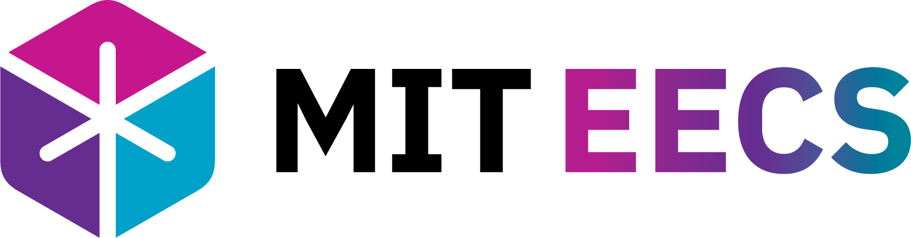

MIT · Physics · FPGA · Quantum Information · High-Performance Computing
M.Subhi Abo Rdan
I am a Physics and Computer Science student at the Massachusetts Institute of Technology (MIT), interested in high-performance scientific computing, FPGA and GPU acceleration, theoretical physics, and quantum information science.
My work spans hardware acceleration, computer architecture, and scientific computing. I have worked on FPGA systems at Apple and MIT STAR Lab, and I am currently interning at Optiver as an FPGA Engineering Intern.
For my MEng, I am working with Prof. Philip Harris and Prof. Hengyun Zhou on quantum control, quantum error correction, reinforcement learning for quantum systems, and FPGA/GPU acceleration for quantum hardware.
Education
Massachusetts Institute of Technology
Bachelor of Science in Computer Science and Engineering
Bachelor of Science in Physics
Selected coursework
EECS / Systems
- 6.S965Digital Systems Laboratory II (FPGAs)Graduate
- 6.S894Accelerated Computing (GPUs, CUDA)Graduate
- 6.5900Computer System ArchitectureGraduate
- 6.5840Distributed SystemsGraduate
- 6.1060Software Performance Engineering
- 6.2050Digital Systems Laboratory (FPGAs)
- 6.1810Operating Systems
- 6.1400Computability and Complexity Theory
Physics / Theory
- 8.371Quantum Information Science IIGraduate
- 8.962General RelativityGraduate
- 6.2410Quantum Engineering Platforms
- 8.033Relativity
- 8.05Quantum Physics II
- 8.044Statistical Mechanics
- 8.223Advanced Classical Mechanics
- 6.3720Statistical Data Analysis
Experience
Work and Research
Summer 2026 · Chicago Current
Optiver · FPGA Engineering Intern
Low-latency FPGA systems for high-frequency trading infrastructure.
Summer 2026 · Chicago Current
Optiver · FPGA Engineering Intern
Low-latency FPGA systems for high-frequency trading infrastructure.
- Working on hardware acceleration for low-latency trading systems.
- Focusing on FPGA design, networking, and production-grade infrastructure.

Sep 2024 – Jun 2026 · Cambridge
MIT EECS Department · Teaching Assistant
Teaching computer systems, digital design, and low-level programming courses.

Sep 2024 – Jun 2026 · Cambridge
MIT EECS Department · Teaching Assistant
Teaching computer systems, digital design, and low-level programming courses.
- Spring 2026 — UTA, 6.1903/6.1904 Introduction to Low-Level Programming in C and Assembly
- Fall 2025 — Lab Assistant, 6.2050 Digital Systems Laboratory (FPGA Design)
- Fall 2024 — Lab Assistant, 6.2050 Digital Systems Laboratory (FPGA Design)
- Spring 2024 — Grader, 8.04 Quantum Physics I

Summer 2025 · Cupertino
Apple · Silicon Engineering Group · FPGA Intern
FPGA-based silicon prototyping and validation infrastructure.
Summer 2025 · Cupertino
Apple · Silicon Engineering Group · FPGA Intern
FPGA-based silicon prototyping and validation infrastructure.
- Built a non-invasive distributed clock-monitoring system for Synopsys HAPS multi-board FPGA setups, enabling runtime frequency measurement through a register-mapped UMRBus3 interface.
- Engineered a cycle-accurate, UVM-style FPGA validation engine using RTL waveform replay to emulate system behavior and enable high-throughput DUT testing.
- Designed a software/hardware pipeline to parse and compress VCD transition traces, achieving a 220× reduction before FPGA-based DUT execution.

Jun 2024–Aug 2025 · Cambridge
MIT STAR Lab · FPGA Research Intern
Optical-modeling FPGA accelerators for high-order wavefront sensing and control.
Jun 2024–Aug 2025 · Cambridge
MIT STAR Lab · FPGA Research Intern
Optical-modeling FPGA accelerators for high-order wavefront sensing and control.
- Designed and evaluated optical-modeling accelerators for high-order wavefront sensing and control on the AMD Zynq UltraScale+ MPSoC ZCU104 using HLS, Vitis, and XRT.
- Contributed to first-author SPIE Photonics West 2025 work on accelerating high-order wavefront sensing and control algorithms with FPGAs.
- Implemented a 2D FFT accelerator with a 360× execution-time improvement over the Arm Cortex-A53 CPU.
- Developed an Angular Spectrum Method accelerator with XRT C++ host integration, reducing data movement and improving parallelism for a 500× speedup over CPU execution.
Jun 2023–Jun 2024 · Cambridge
MIT Undergraduate Research Opportunity Program (UROP)
Research across the MIT Media Lab, META Lab, and Kavli Institute.
Jun 2023–Jun 2024 · Cambridge
MIT Undergraduate Research Opportunity Program (UROP)
Research across the MIT Media Lab, META Lab, and Kavli Institute.
-
MIT META Lab
- Developed a physical model to investigate the snap-in dynamics of microcantilevers in Atomic Force Microscopes (AFMs).
- Built a finite-difference simulation framework to model nonlinear cantilever dynamics and predict optimal snap-in distance and timing for high-resolution nanoscale measurements.
-
MIT Media Lab (Signal Kinetics)
- Developed a physics-based underwater imaging simulator in Python using the Jaffe–McGlamery model to generate realistic underwater scenes and study optical degradation under varying water conditions.
- Designed a color-reconstruction algorithm that combines information from multiple monochromatic underwater images captured at different distances to recover accurate color.
- Achieved 8.5% color reconstruction error across four distinct water types.
-
MIT Kavli Institute for Astrophysics and Space Research
- Analyzed astronomical survey data from NEOWISE to identify transient infrared sources and candidate tidal disruption events (TDEs).
- Reduced an initial dataset of approximately 50,000 objects to roughly 200 promising candidates for further astrophysical investigation.
Projects
Projects
- Developed a framework for studying dynamically evolving stabilizer-code symmetries during pieceable fault-tolerant quantum gate constructions, focusing on logical Clifford and multi-qubit gate synthesis.
- Implemented automorphism-search and logical-action verification tools using Python, Stim, and GF(4)/symplectic representations to analyze intermediate quantum error-correcting codes and encoded logical operations.
- Designed and implemented a low-latency, line-rate 100 Gbps UDP offload engine on an AMD UltraScale+ RFSoC operating at 322.22 MHz, including connection bookkeeping via a fully pipelined, set-associative hash table.
- Built a SmartNIC-style near-memory architecture leveraging AXI HP and cache-coherent ACP ports via DMA, enabling ultra-low-latency packet delivery directly into CPU memory and caches.
- Implemented the Raft distributed-systems consensus algorithm. Integrated snapshotting to compress Raft logs, reducing recovery latency and minimizing storage footprint.
- Built a distributed, fault-tolerant key-value store with dynamic sharding using Raft, supporting reconfiguration and load balancing via RPC-based coordination among cluster nodes.
- Built for fault tolerance under leader changes and partial failures.
- Developed a real-time QR code scanner on an AMD Urbana FPGA, integrating an OV7670 camera module and HDMI output; awarded the MIT EECS George C. Newton Laboratory Prize (2024).
- Implemented image processing pipelines to grayscale, denoise, detect alignment patterns, and decode QR codes as small as 240×240 pixels in under 0.02 seconds.
Publications
Publications
Proc. SPIE 13627 · 2025
Read Paper ↗Accelerating high-order wavefront sensing and control algorithms with FPGAs
, N. Belsten, S. Rao, A. W. Taka, B. Eickert, K. Milani, E. S. Douglas, L. Pogorelyuk, K. Cahoy.
Proc. SPIE 13627 · 2025
Read Paper ↗Demonstrating real-time wavefront sensing and control with space processors
B. Eickert, N. Belsten, K. Milani, A. Taka, , L. Pogorelyuk, S. Rao, E. S. Douglas, K. Cahoy.
Honors
Honors and Awards
George C. Newton Laboratory Prize
Awarded for FPGA QR-code Project.
🥉 Bronze Medal
2020, 2021
🥉 Bronze Medal
2020, 2021
🥈 Silver Medal
2021
Honorable Mention
2021
Stack